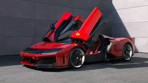

¿Por qué me gusta la F1?
La Fórmula 1 es el deporte motor más importante del mundo. Los autos alcanzan velocidades de más de 300 km/h y los pilotos necesitan mucha concentración y habilidad para competir. Mi equipo favorito es Ferrari, que es el equipo más antiguo de la historia de la F1.
Para saber más podés visitar el sitio oficial de Ferrari: Ferrari F1 Oficial
Imágenes
Auto de Ferrari en pista (imagen local):

Logo de Ferrari (imagen de internet):
Datos del equipo
Nombre: Scuderia Ferrari
País: Italia
Fundación: 1950
Pilotos actuales: Charles Leclerc y Carlos Sainz